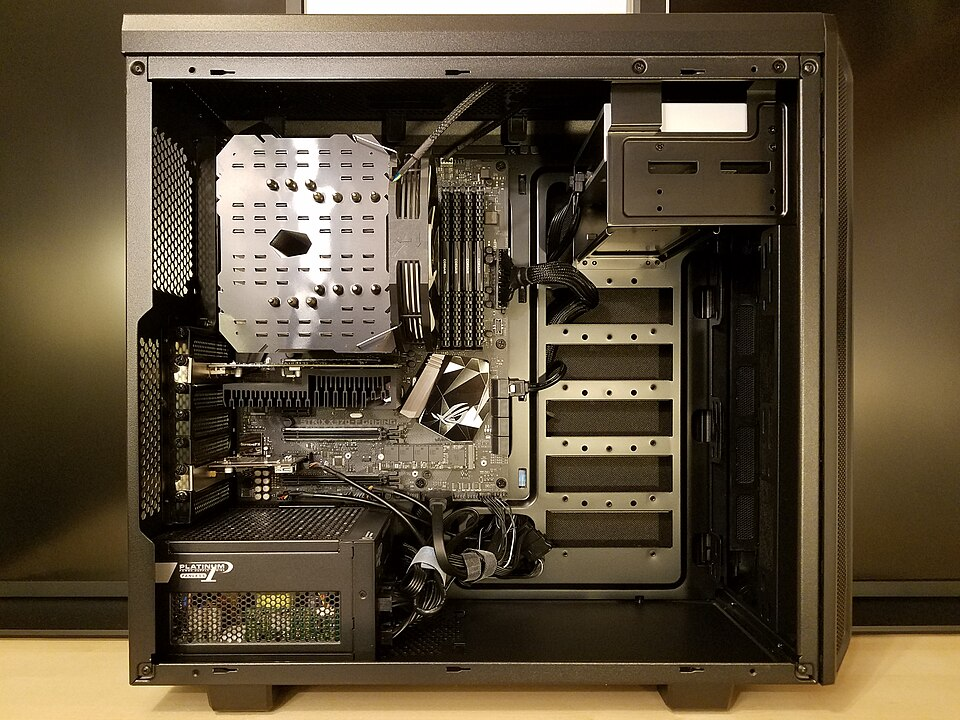
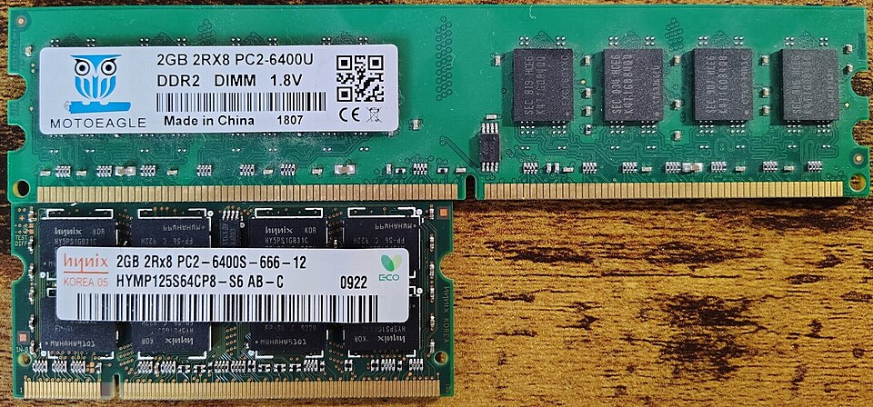
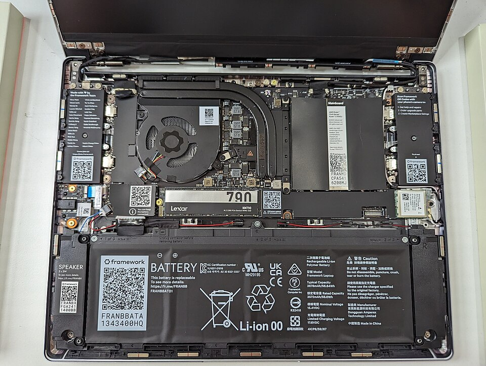
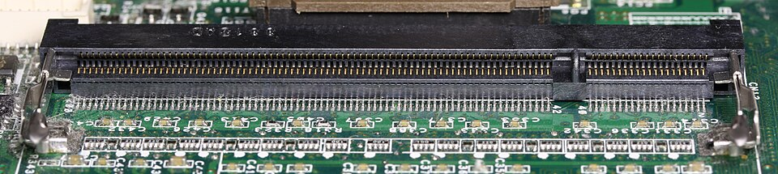
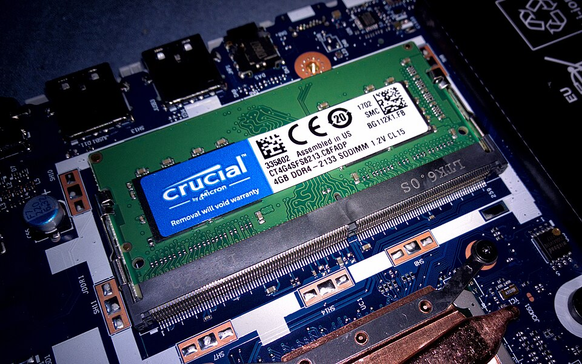

Laptop repair from intake to module replacement
Start with the parts of a desktop PC. Find the same jobs being done inside a laptop, then practise servicing an SSD or RAM and proving the result.
Start with a desktop computer
Start with the case, monitor and keyboard of a desktop PC. The motherboard is the large circuit board that joins the components. The processor (CPU) runs instructions. The RAM is the temporary workspace for the running program, and the SSD is where files and the operating system stay when power is off. The power supply feeds the board and drives. The graphics hardware supplies the image to the monitor. It can be on a separate card or built into the processor.

Photo by Bretwa, scaled for the course, with labels added. Original photo · CC BY-SA 4.0.

| Part | What to look for | A repair clue |
|---|---|---|
| Motherboard and CPU | Look for the large board that sockets and cables plug into. The CPU is under the heatsink and may be soldered on a laptop. | Fans or LEDs can come on before the CPU and firmware finish their startup checks. |
| RAM | Desktop sticks usually stand in long DIMM slots. Replaceable laptop sticks lie flat in shorter SO-DIMM sockets. Some laptops use soldered RAM. | A bad or incompatible module can prevent startup. More RAM does not add file storage. |
| SSD or hard drive | A cabled or bay-mounted drive can be a rectangular SATA device. A screw-retained M.2 SSD looks like a narrow circuit board. Match the interface as well as the shape. | When a drive is missing, many PCs can still enter firmware setup. The installed operating system may fail to start or a boot error may appear. |
| Cooling | The heatsink touches the chip through thermal material. Its fan moves air through the fins. | A rattling fan and a silent machine with a blocked vent call for different checks. |

Photo by SaltyCruton, scaled for the course. Original photo · CC0.


Photo by Dsimic, scaled for the course. Original photo · CC BY-SA 4.0.

Watch on YouTube · Kingston’s desktop CPU, cooling and RAM walkthrough. Pause when the cooler goes on. Point to the processor socket, the long RAM slots and the cooler fan before watching the assembly.
Find the same parts inside a laptop
A laptop combines the monitor, keyboard, touchpad, battery and speakers with the same core computing parts. Its charger and charge circuitry take the place of the desktop power supply. A laptop often uses thin flexible cables for the screen or controls. The connectors are small and may open by lifting a latch, by sliding a plug parallel to the board or by lifting a press connector straight up. Check the manual for that socket before applying force.

1 · Cooling fan. 2 · M.2 SSD. 3 · Battery. 4 · Memory module area.
Photo by Ogidya, resized, with labels added. Original photo · CC BY 4.0.

Observe a running computer before you open it. On a working Windows PC, open Task Manager and choose Performance. Record the CPU name, installed memory and disk model or capacity as three separate entries. On your own spare, enter firmware setup using the maker’s instructions and record any drive and memory information it reports. Leave settings as they are. Compare those entries with the photograph and the parts list for the exact model.
Follow power, startup and boot in order
- Power arrives. The adapter or battery makes energy available to the board. A charging light can appear while the computer itself is still off.
- Firmware runs its startup checks. Firmware is the board’s startup program. Its power-on self-test (POST) checks or initialises hardware such as RAM. The manufacturer may report a problem with an LED pattern, beeps or a screen message.
- Firmware loads a boot program from the selected device. A healthy board can enter firmware setup even when the SSD is missing. A blank or unbootable SSD can be detected without being able to start an operating system.
- The running system displays an image. A failed panel, backlight or cable can leave the internal screen dark even if the computer reaches the operating system.
Classify the complaint while the laptop is closed
Write the exact model, what happened before the failure, the adapter model, and whether preserving data is the priority. Note current condition and any cracks, missing screws or accessories. Start on your own working or repairable spare with a backup and a scratch drive. Stop applying power if there is visible swelling, signs of liquid ingress or unusual heat and follow the maker’s handling guidance.
| Symptom | First evidence to collect | What you can narrow down |
|---|---|---|
| No power | No response to Power. Check wall supply using a known-working outlet, adapter rating, supported cable and the specified charge port. Record adapter and charge LEDs if fitted. | Use a known-good supported adapter and cable before investigating the board. An open-circuit adapter reading alone gives little evidence about current delivery. |
| No POST | Fans or LEDs respond, but firmware never completes its power-on self-test. Record LED and beep patterns and check the exact model’s code table. | Use the documented preboot tests and isolate compatible removable memory if the model permits. Keep one known baseline configuration. |
| No boot | Firmware setup opens but the OS does not start. Check whether the firmware sees the drive and identify the boot error. | Storage detection, boot configuration or OS is the next branch. Preserve user data before any write, reinstallation or recovery action. |
| No video | Machine appears to run with a black or failed internal screen. Try the supported display self-test and an external monitor where supported. | External display or a successful LCD self-test changes the next check. Record exactly what each test exercises on the model. |
LED codes and preboot shortcuts are model-specific. Check the maker’s instructions before changing firmware or firmware settings, particularly where drive encryption is enabled. Dell’s symptom and diagnostics guide.
Prepare a spare laptop and identify its fasteners
Use a working spare that belongs to you. Back up important data, keep the recovery information for an encrypted drive, and note the working charge, display, storage and memory results. Find the full model and generation from the label or firmware. Download the manual before opening the case and keep it open on another screen. The pictured example is a Framework Laptop 13 with the AMD Ryzen 7040 Series mainboard. The bottom cover on many other laptops opens differently.
- Matching driver and plastic openerConfirm the fastener head in the manual. The Framework example uses a T5 bit for its cover and storage fasteners.
- Screw tray or paper mapRecord positions and lengths as they come out, including brackets and shields.
- Nonconductive workspace and ESD precautionsUse good light and static protection for isolated electronics. Unplug external power and follow the model’s internal battery isolation procedure.
- Spare drive or memoryUse a compatible part and a test drive you are allowed to change. Identify the correct storage interface and RAM generation first.
On the Framework, the keyboard and touchpad are part of a removable top Input Cover. The cover stays tethered while you first lift it. Support it and check the touchpad connector before moving it away. Keep the charger unplugged and use the service guide for opening and disconnecting the battery on an assembled unit. The Framework guide shows the battery plug sliding straight out in the plane of the board. Compare that with the touchpad’s press plug, which lifts up. Framework’s assembled-unit opening and battery procedure.

Photo by Zeroping, scaled for the course. Original photo · CC0.

Bench exercise on a removable SSD
Use the existing scratch drive for a remove-and-refit exercise first. For a replacement, check the manual for interface (SATA or NVMe), form factor (such as M.2 2280), and any allowed thickness or thermal pad arrangement. In 2280, 22 is the width and 80 is the length in millimetres. A card that fits the screw position may still use the wrong interface.

Photo by Kent Madsen (Designermadsen), resized. Original photo · CC BY-SA 2.0.

Watch the manufacturer’s SSD installation clip · Framework Laptop 13 AMD Ryzen 7040, step 5. Identify the contact edge being seated while the card is angled up, then watch the far end come down to the standoff.
Record the baseline and isolate. In the firmware or the operating system, note which drive is detected. Shut down, unplug and isolate the battery as documented. Photograph the existing card, retaining screw and any heat shield.
Remove the existing drive. For the Framework example, keep a finger on the free end while removing the retaining screw. Let the card rise gently, then slide it out following its insertion angle. On a SATA drive, use the specified pull tab, cable or tray procedure instead.
Refit one drive. Align the notch and seat the contacts in the socket before holding the free end down. The screw secures an already seated drive. Restore the original thermal pad or shield as specified. Reconnect the battery and close the case following the manual.
Verify detection before working on software. Confirm the expected drive and capacity. Run the supported read-only test where available. A confirmed blank replacement needs a separate, authorised plan for restoring or installing the system.
With a backed-up spare and no customer data, compare the observed state before and after removing its scratch drive and properly reassembling. Does the computer still reach firmware? Is that drive listed? Refit it and confirm the original state returns. If a real drive is intermittent and its data is important, preserve it and hand off before writes or repeated tests.
Bench exercise on removable RAM
Find out whether the RAM is removable. In the Ryzen 7040 Framework example it is DDR5 SO-DIMM. Choose a supported part, voltage, generation and capacity from the documentation. The socket photograph below shows the physical concept on a different board.

Photo by D-Kuru, scaled for the course. Original photo · CC BY-SA 3.0 at.


Photo by Diego Torres Silvestre, scaled for the course. Original photo · CC BY 2.0.

Watch the manufacturer’s RAM installation clip · Framework Laptop 13 AMD Ryzen 7040, step 4. Watch the keyed edge enter the socket before the two latches engage. That guide identifies Channel 0 for one module and explains the different socket orientation.
Set a known baseline. Note installed capacity and slot use, then power down and isolate. Release the two retaining clips as the manual shows. On a typical SO-DIMM socket the module rises at an angle and slides out along that angle.
Fit the known-good configuration. Match the notch, seat the contacts fully and press the module down until both clips hold it. Retest the original module before trying a spare. Change only one module or one supported slot at a time.
Verify startup and memory. Give the first startup the time the maker specifies for memory training. Record LED patterns if it fails. Check recognized capacity and run the maker’s memory diagnostic before drawing a conclusion.
Work a fan, screen or keyboard complaint
| Complaint | First comparison | What to identify in the manual |
|---|---|---|
| Fan rattles or machine overheats | Note when the noise occurs, check that air can enter and leave, and compare temperatures under the same supported load before and after work. Stop a test if the system reports overheating. | Fan plug, duct and fin stack, heatsink fastener sequence and the correct paste or pad locations. Framework’s illustrated cooling service procedure. |
| Internal screen dark | Look for startup signs and try a known-good supported external display or the maker’s built-in panel test. Record whether the issue changes as the lid moves. | Exact panel type, display cable and hinges. Use the model’s screen procedure with the battery isolated. An external image narrows the failed path but does not identify the failed part by itself. |
| A row of keys or the touchpad fails | Compare a known-good external input device and any supported preboot input test. Record which physical keys or gestures fail. | Keyboard or touchpad flex, connector and latch. Inspect a disconnected flex or donor socket under magnification before replacing the whole cover. |
After reassembly, retest the original complaint and everything you disconnected. A storage job on a top-opening laptop can disturb the touchpad. Record the exact model, part, evidence and results. Use C16’s job workflow for your record and P33 when the external no-power checks pass and you want to learn board-level diagnosis.